有机化学8-1全-醛酮8-1 20260514.pdf
醛酮 §
- 简单醛：同醇的命名，芳香醛把-Ar看作取代基，比如苯甲醛
- 简单酮：XX酮，两个X是酮羰基左右的基团，如果一个是-Ar一个是-R，则命名为酰基苯
- 系统命名：选主链，从靠近羰基一侧开始编号，写取代基，标羰基位置，比如4-甲基戊-2-酮，醛>酮>醇>卤素>硝基>不饱和烃，环上的如果羰基碳在环内则为环X酮，如果在环外，把换作为取代基
化学性质分析 §

反应 §
- 羰基的亲核加成 加成
- 原理：−CO−+Nu水解−C(OH)(Nu)−
- 与格氏试剂R1−CO−R2+R−MgXH+H2OR1−C(OH)(R)−R2 控pH反应 立体性：酮的赤式和苏式遵循Cram规则 立体选择性 赤式和苏式 立体化学
- Cram规则 人名反应：与格氏试剂加成，羰基处于M和S两个基团中间，Nu从S基团一侧进攻羰基碳（位阻小）立体选择性 H 立体化学
- 活性顺序：醛>酮，-R>-Ar，原理：EWG>EDG，还有空间位阻影响，比如脂肪酮>芳香酮
- Li试剂R1−CO−R2+R−LiH+H2OR1−C(OH)(R)−R2 控pH反应 如果格氏试剂位阻太大，可以用Li试剂代替格氏试剂，也需要水解才能变成醇
- 炔基钠R1−CO−R2R−C≡CNa水解R1−(OH)(C≡C−R)−R2 可以制备炔醇，后续同样要酸性水解 控pH反应
- Reformasky反应 人名反应 见羧酸衍生物 羧酸及其衍生物 R1COR2+Br−CH2−COOR1. Zn2. H2O, H+R1(OH)(R2)CH2COOR 控pH反应 特点：RZnBr活性不如RMgBr，不会和酯基反应，后续羟基可以在酸性条件下消除，生成α,β−不饱和酸
- 与HCN反应：生成α−羟基腈，后续如果酸性水解生成α−羟基酸，如果浓硫酸则消除为α,β−不饱和羧酸 控pH反应
- 与NaHSO3反应R1−CO−R2+NaHSO3→R1−(OH)(SO3Na)−R2↓ 为白色沉淀，且反应可逆，在酸碱环境下Δ均可以还原回去，所以可以用来提纯
- 与水反应：生成偕二醇R1−CO−R2+H2O→R1−C(OH)2−R2 如果羰基和EWG连接，则可形成稳定的偕二醇，否则会脱水重新生成醛酮
- 与醇的加成R1−CO−R2+ROHH+(无水酸)R1−C(OR)2−R2 控pH反应 最终生成缩醛酮，注意酸一定是无水酸，比如氯化氢，con. H2SO4，TsOH等 Ts 在稀酸溶液中，会重新分解为原来的醛酮
- 醇加成的例子：末端醇酮的自身加成成环状半缩醛酮
- 与二醇的用处：成环状缩酮保护醛酮，见下图
- 与氨和衍生物（胺类，肼类）的反应R1−CO−R2+H2N−RH+R1R2C=N−R 用弱酸催化（eg:NH4Cl），用强酸会和N结合，失去Nu 控pH反应 机理：
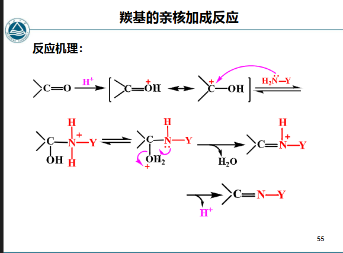
- 几类和氨及其衍生物的反应产物：
- 和NH2OH：生成C=N−OH (肟）
- 和肼类：C=N−NHR（腙）
- 和伯胺：C=NR（Schiff base，为一种亚胺）一般芳香亚胺比较稳定（π−π共轭）
- Beckman重排 人名反应：肟在酸催化下重排为酰胺 控pH反应 R1R2−C=N−OHH+R2−CONH−R1 机理：
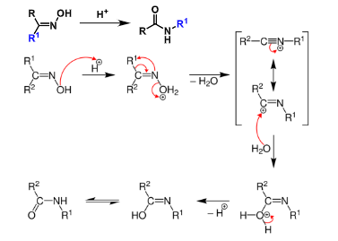
R1为迁移基团，如果有手性，重排后手性不变 立体选择性 迁移基团的规则：与-OH处于反式的基团重排 立体选择性 （见上图，下面机理的R1处于-OH的反式位置，所以重排
- Schiff base 人名反应性质：
- 容易被稀酸水解，可以保护醛基 控pH反应
- 可以用H2和Pd做Cat.还原 还原，制备二级胺（−NH2）
- 与仲胺的加成脱水反应：α−H脱去，仲胺的H脱去，CO的O脱去，生成水，α−C和羰基C+生成C=C，且仲胺的N连在羰基C+上 机理：
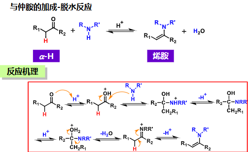
生成烯胺
- 烯胺的双重亲核性：R2N−C=C↔R2N+−C=C− 此时这个C−可以被E试剂取代，比如R-X的R+，X−则和N+成盐
- Wittig反应 人名反应
- Wittig试剂：磷叶立德 Ph3P+X−CHR1R2→Ph3P+CHR1R2X− 鎓离子 生成鏻盐，然后在强碱（NaH/n-BuLi/PhLi）作用下夺X−形成C− Ph3P+CHR1R2X−+PhLi→Ph3P+C−R1R2+C6H6+LiX 并且还会生成双键 Ph3P+C−HR1R2↔Ph3P=CR1R2
- 反应方程式： Ph3P+C−HR1R2+RCOR′→R1R2C=CR(R′)+Ph3P=O 常用于合成一些烯烃
- 机理：
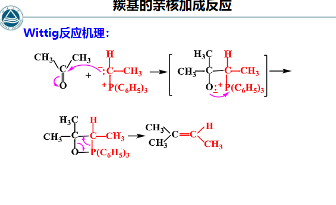
- 常用亲核试剂：
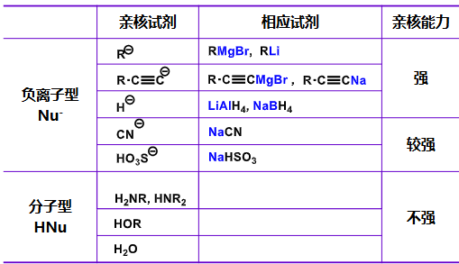
- α−H反应
- 酸性：被碱拔H，生成R−CO−CH−R并且能烯醇互变，如果连接EWG则α−H酸性增强，所以R−CO−CH2−CO−R′这类结构的都有活泼的α−H，比如各种羧酸衍生物含有二羰基结构的类型
- 卤化反应 Ph−CO−CH3Br2,AlCl3乙醚，低温Ph−CO−CH2Br 机理：
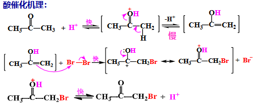
酸催化下可以控制在一卤代阶段，因为电子云密度增强，使得O的电子云密度下降 控pH反应 控温
- 卤仿反应 R−CO−CH3X2碱R−CO−CX3碱R−COO−+HCX3 碱催化下，进攻位阻小的α−H，且难以控制在一卤代物，而是完全变成CXn 立体选择性 控pH反应 CHX3为卤仿，比如用I2和NaOH反应，生成碘仿亮黄色沉淀，要注意的是，卤素有氧化性，所以有CH3C(OH)−时会氧化成CH3CO−，也可进行卤仿反应，卤仿反应可用于减短碳链
- 羟醛缩合 加成 又称为Aldol缩合 人名反应
- 反应式 R1−CHO+H−R2−CHO碱或酸R1−CH(OH)−R2−CHOΔR1−CH=R2−CHO 在稀碱或稀酸的催化下，含有α-氢原子的醛或酮结合在一起，生成 β- 羟基醛或酮的反应，所以反应称为羟醛缩合反应 控pH反应 控温
- 机理：
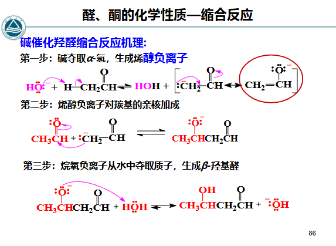
- 特点：一个是醛，后续变成C(OH)，一个是有α−H的醛酮，后续脱去α−H，保留羰基，后续羟基脱水也会变成不饱和双键
- 如果用甲醛，那可以引入−CH2OH
- Claisen-Schmidt缩合 人名反应：芳醛与含 α-氢的醛或酮在碱性条件下反应脱水生成 α,β-不饱和醛或酮 Ph−CHO+CH3CHO碱Ph−CH=CH−CHO 控pH反应 同Aldol缩合
- Perkin反应 人名反应：芳醛与脂肪族酸酐在其碱金属盐催化下加热缩合 Ph−CHO+(CH3CO)2O碱, ΔPh−CH=CHCOOH 控pH反应 控温 原理同Aldol缩合，特点：酸酐必须有 α-H，羧酸盐与之对应，且不适用于脂肪醛，其易发生自身缩合反应
- Mannich反应 人名反应：含有α-活泼氢的化合物（如酮）与醛及胺之间发生的三组分缩合反应， 使用甲醛时可在酮的α位引入一个胺甲基，称为胺甲基化反应，原理是Aldol缩合加上胺取代羟基 R1COCH2R2+HCHO+HNR(R′)H+R1COCH(R2−CH2−NR(R′)) 控pH反应
- 氧化 氧化
- 温和氧化剂：Tollen试剂，Fehling试剂 人名反应
- Tollen试剂：[Ag(NH3)2]OH，即银氨溶液，氧化醛基
- Fehling试剂：CuSO4，即铜氨溶液，仅氧化脂肪醛
- Ag2O：不氧化双键，氧化醛基
- 强氧化剂：KMnO4和K2Cr2O7等
- 醛基在-Ar上，条件不能过于剧烈
- 实例：R−CHOKMnO4H2SO4R−COOH Ph−CHOCrO3,H+或冷稀KMnO4Ph−COOH 控温 控pH反应
- 氧化酮用强氧化剂，包括con. HNO3 R1−CH2−CO−CH2−R2强氧化剂R1−COOH+R2CH2−COOH 如果氧化环酮，可以制取二元羧酸
- Baeyer-Villiger氧化重排 人名反应
- 酮被过氧酸氧化成酯 R−CO−R′R′′CO3HR−COO−R′
- 过氧酸可用CH3CO3H,CF3CO3H,PhCO3H
- 醛发生此反应生成羧酸
- R’为迁移基团，会在羰基和R’中间插个O
- 连接基团多的先迁移，H>3’C>环己基>2’C>-Bn>-Ph>1’C>-Me（注意几个芳基的位置）
- 迁移基团手性不变 立体选择性
- 还原 还原
- 催化加氢：生成醇，同时还原碳碳双键和三键
- LiAlH4和NaBH4再水解，生成醇，但是不还原碳碳双键三键，还原性LiAlH4>NaBH4，前者还可以还原羧酸及其衍生物和−NO2，后者只能还原醛酮
- Meerwein-Ponndorf还原 人名反应：R1−CO−R2+CH3CH(OH)CH3((CH3)2CHO)3AlR1−CH(OH)−R2+CH3COCH3 异丙醇作为还原剂，((CH3)2CHO)3Al起到催化剂(路易斯酸催化)的作用，相当于把酮羰基和异丙醇的羟基互换，逆反应为Oppenauer氧化 人名反应 异丙醇过量则平衡右移，走M-P还原，如果丙酮过量，则走Oppenauer氧化
- 金属的酮双分子还原：
- 反应：2R1−CO−R21. Mg，苯2. 水解R1R2C(OH)−C(OH)R1R2 相当于两分子酮羰基还原成羟基，并且两个羰基碳成键
- 还原剂：钠、镁、铝或镁汞齐、铝汞齐等
- 非质子性溶剂中反应，再水解后产物：邻二叔醇（频哪醇）
- Clemmensen还原 人名反应：R1−CO−R2Zn-Hgcon. HClR1−CH2−R2 把醛酮还原成了烷基
- Wolff-Kishner-Huang M.L.还原法 人名反应 脱气体
- W-K还原：R1−CO−R2N2H4强碱R1−CH2−R2+N2 控pH反应
- 黄鸣龙还原：R1−CO−R2N2H4⋅H2O,碱乙二醇或三甘醇, ΔR1−CH2−R2+N2 优点：安全
- Cannizzaro反应 人名反应
- 原理同双分子还原，不过是碱催化下的反应
- 不过产物太杂，所以常用的是无α-H的醛+甲醛的：R−CHOHCHOcon. NaOHR−CH2OH+HCOONa 控pH反应 原理是两个醛基，一个被还原成醇，一个被氧化成羧酸
- α,β−不饱和醛酮 加成
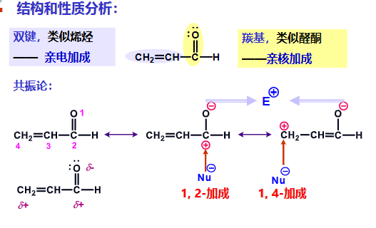
- 酸催化和碱催化机理不同 控pH反应
- 酸催化：
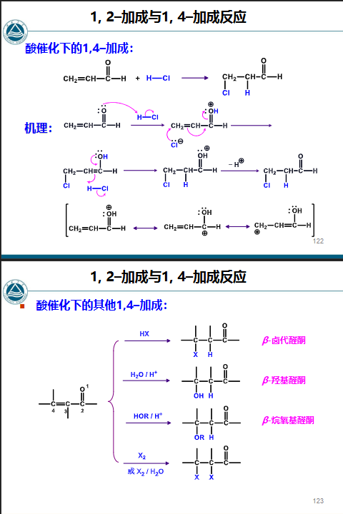
Nu加在β-C上
- 弱碱催化：
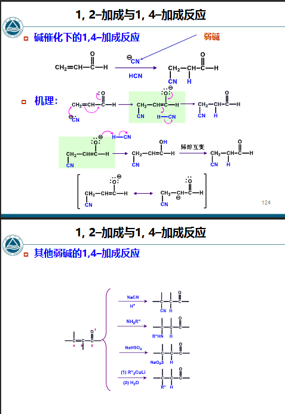
Nu加在β-C上
- 强碱催化：
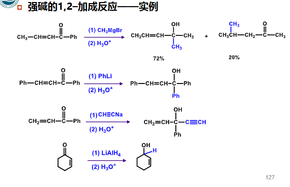
在1,2位加成，所以可能出现两种产物
- 制备醛酮
- 醇催化脱氢得醛，用Cu,Ag,Ni等催化剂 R−CH2OHΔCuR−CHO+H2 控温
- 氢甲酰化反应 R−CH=CH2+CO+H2硬脂酸钴, ΔR−CH2CH2−CHO 还可能在2’C上醛基，不过比例少 控温
- 烷基苯的氧化 氧化 Ph−CH3O2,ΔV2O5R−CHO Ph−CH2−RO2,Δ硬脂酸钴R−CHO
- 醇氧化 氧化 控pH反应
- Sarrett试剂 人名反应 ：R1−CH(OH)R2CrO3吡啶R1−CO−R2
- Jones试剂 人名反应：R1−CH(OH)R2CrO3H2SO4R1−CO−R2
- Oppenauer氧化 人名反应：R1−CH(OH)R2((CH3)2CHO)3Al,丙酮R1−CO−R2
- 以上三种的R可以不饱和，不会被氧化
- 羧酸衍生物的还原 羧酸及其衍生物
- 酰氯的还原 R−COCl1. LiAl(t-BuO)3H, 乙醚，低温2. H+水解R−CHO 控pH反应 控温
- 酯的还原 R−COOR′AlH(i-Bu)2, 己烷，低温H+水解R−CHO 控pH反应 控温
- Rosenmund还原 人名反应 R−COClH2Lindlar催化剂R−CHO
- 酰基化
- F-C反应酰基化 人名反应
- Gattermann-Koch反应 人名反应：在Lewis酸的催化下,用一氧化碳和氯化氢与芳烃作用生成芳醛的反应 C6H6+CO+HClAlCl3−CuClPh−CHO